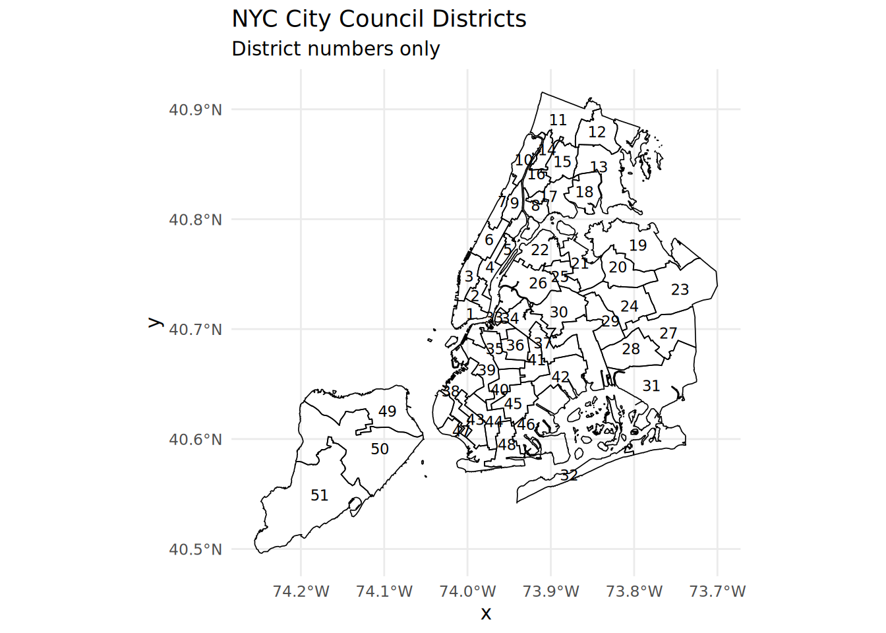
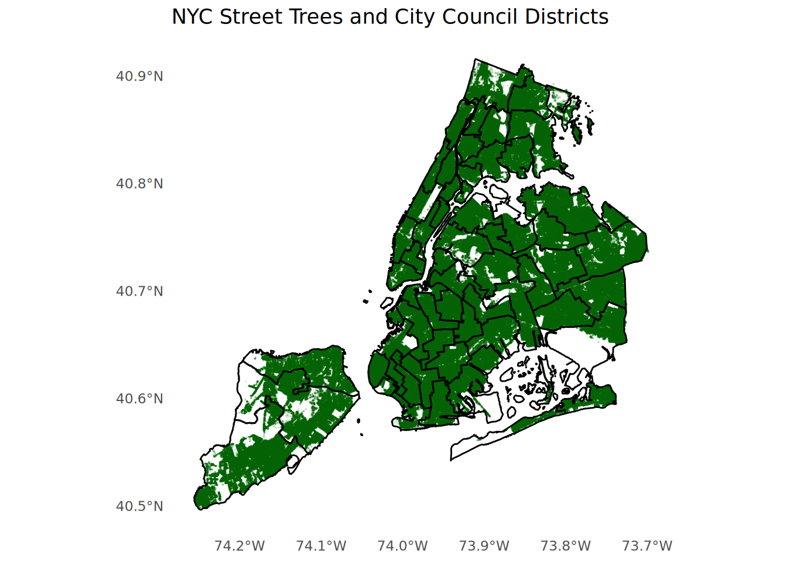
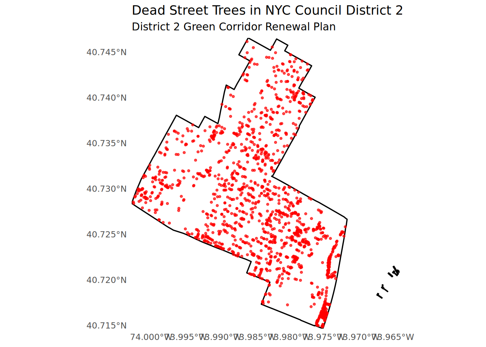
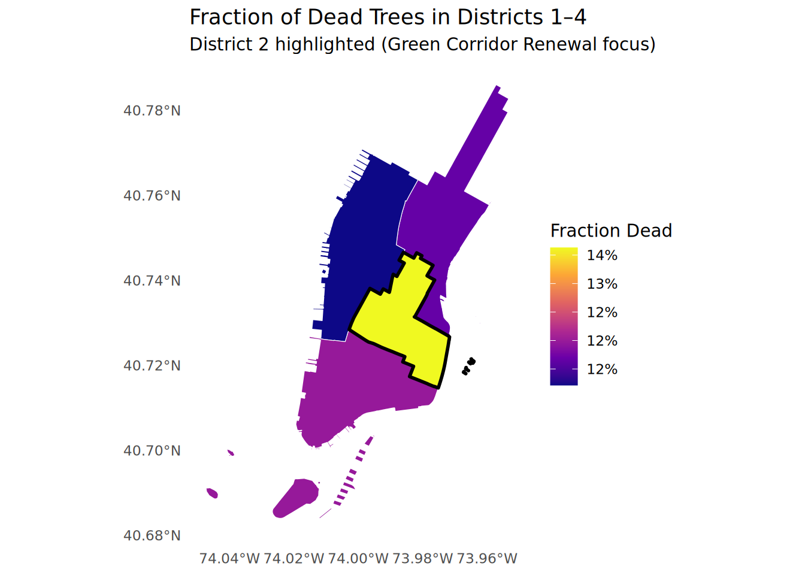

NYC Tree Party
New York City’s trees are one of our most valuable public resources — cooling our streets, improving air quality, and strengthening the livability of our neighborhoods. But not every community benefits equally. As a City Council member, I want to ensure that historically overlooked districts receive the same green investment as the rest of the city.
DPR manages nearly 900,000 trees across 30,000 acres of parkland, yet the data shows clear differences in tree density, health, and species diversity across council districts. By analyzing the NYC TreeMap dataset, I aim to highlight where these gaps exist and use that evidence to advocate for targeted funding to expand and maintain our urban forest.
Investing in trees isn’t just beautification — it’s an issue of equity, public health, and resilience. Every New Yorker deserves clean air, shaded streets, and access to the benefits our city’s trees provide.
First, let’s take a look at the data and look at all the city council districts.
As you could see, there are 51 city council districts in New York City.
Once we have visualized all the districts, next we are going to visualize the trees that within each one.

This plot overlays all NYC street tree locations on top of the City Council district boundaries. Because the city has such a large number of trees, the individual points are so dense that they blend together and form solid green areas rather than distinct dots. This density highlights how heavily planted certain neighborhoods are and gives a quick visual impression of where trees are most concentrated across the city.
Now that we have visualize our council districts and its trees, it’s time to do more in depth analysis on the data.
Here will be the 4 things will be looking for
- Council district with the most trees
- Council district with the highest density of trees
- Council district with the highest fraction of dead trees
- The most common tree species in Manhattan
Let’s begin!
We are going to run this code below to figure out the council district with the most trees.
Code
suppressPackageStartupMessages({
library(scales)
library(DT)
})
tree_districts <- st_join(
tree_points,
nyc_council_districts,
join = st_within
)
trees_by_district <- tree_districts %>%
st_drop_geometry() %>%
group_by(CounDist) %>%
summarize(n_trees = n()) %>%
arrange(desc(n_trees))
top_tree_district <- trees_by_district %>% slice_max(n_trees, n = 1)
top_tree_district# A tibble: 1 × 2
CounDist n_trees
<int> <int>
1 51 70965Code
total_trees <- top_tree_district$n_trees
total_trees_comma <- format(total_trees, big.mark = ",")After running the code, we can conclude that it is district 51 with 70,965 trees.
Next, we will run code to figure the districts with the highest density of trees.
Code
district_area <- nyc_council_districts %>%
st_transform("EPSG:2263") %>%
mutate(area_m2 = st_area(geometry)) %>%
st_drop_geometry() %>%
select(CounDist, area_m2)
district_stats <- trees_by_district %>%
left_join(district_area, by = "CounDist") %>%
mutate(
density_per_m2 = n_trees / as.numeric(area_m2),
density_per_km2 = density_per_m2 * 1e6
)
top10_density <- district_stats %>%
arrange(desc(density_per_km2)) %>%
slice(1:10) %>%
rename(
`Council District` = CounDist,
`Tree Count` = n_trees,
`Area (m²)` = area_m2,
`Trees per km²` = density_per_km2
)
datatable(
top10_density,
rownames = TRUE,
options = list(
pageLength = 10,
autoWidth = TRUE
),
caption = "Top 10 NYC Council Districts by Tree Density"
)The table above shows us different characteristics of each district. At the end, you are able to see that district 7 is the most dense area, with about 284 trees per square kilometer.
The next thing we will try to figure out is the district with the highest fraction of dead trees.
Code
dead_stats <- tree_districts %>%
st_drop_geometry() %>%
group_by(CounDist) %>%
summarize(
total_trees = n(),
dead_trees = sum(tpcondition == "Dead", na.rm = TRUE),
fraction_dead = dead_trees / total_trees
) %>%
arrange(desc(fraction_dead))
worst_district <- dead_stats %>% slice(1)
worst_district# A tibble: 1 × 4
CounDist total_trees dead_trees fraction_dead
<int> <int> <int> <dbl>
1 32 30270 4315 0.143With the code above, we infer that district 32 has the highest fraction, with 14.3% of their tress being dead.
Lastly, we will write up code to find the most common tree species in Manhattan.
Code
tree_boroughs <- tree_districts %>%
mutate(
borough = case_when(
CounDist >= 1 & CounDist <= 10 ~ "Manhattan",
CounDist >= 11 & CounDist <= 18 ~ "Bronx",
CounDist >= 19 & CounDist <= 32 ~ "Queens",
CounDist >= 33 & CounDist <= 48 ~ "Brooklyn",
CounDist >= 49 & CounDist <= 51 ~ "Staten Island",
TRUE ~ NA_character_
)
)
manhattan_trees <- tree_boroughs %>%
filter(borough == "Manhattan")
species_counts <- manhattan_trees %>%
st_drop_geometry() %>%
filter(!is.na(genusspecies)) %>%
count(genusspecies, sort = TRUE)
most_common <- species_counts %>% slice(1)
most_common_species <- most_common$genusspeciesAs a result, we get the Gleditsia triacanthos var. inermis - Thornless honeylocust species as the most common tree species in Manhattan.
Before we introduce our tree funding project in our district, one final analysis we did was figuring out the tree species closest to Baruch College.
We conclude that the Quercus acutissima - sawtooth oak is the nearest tree species to Baruch College.
Nonetheless, now we are ready to introduce our new tree funding project for district 2!
District 2 Green Corridor Renewal Plan
A proposal for renewed canopy coverage, public safety, and neighborhood vitality
New York City’s street trees are an essential piece of its urban infrastructure, shaping the quality of life in every neighborhood. In District 2 — encompassing the East Village, Gramercy, Kips Bay, and parts of the Lower East Side — the continuity of our “green corridors” has steadily deteriorated due to aging trees, sidewalk stress, pollution, and increasingly volatile weather. Dead and declining trees now interrupt once-thriving canopy pathways, reducing shade, weakening stormwater absorption, and creating localized heat zones along major pedestrian routes.
To address this, I propose the District 2 Green Corridor Renewal Plan, a targeted initiative to remove hazardous dead trees and replant resilient, climate-adaptive replacements in priority locations throughout the district. This plan focuses on restoring canopy continuity along key residential and commercial corridors, improving public safety, beautifying heavily trafficked streets, and ensuring long-term environmental benefits.
Project Scope
# A tibble: 1 × 4
CounDist total_trees dead_trees fraction_dead
<int> <int> <int> <dbl>
1 2 11563 1576 0.136
District 2 contains 11,563 trees, of which 1,576 (about 13.6%) are dead.
The proposed renewal effort would:
Remove all identified dead trees
Replace them with new plantings, with a recommended buffer of ~20% additional trees to strengthen long-term canopy resilience
Prioritize replanting along continuous pedestrian corridors, including 1st Avenue, 2nd Avenue, East 14th Street, and residential side streets with limited shade coverage.
Why District 2 Is the Right Place for This Investment

When compared to nearby districts — notably Districts 1, 3, and 4 — District 2 stands out:
It has a higher fraction of dead trees than at least two adjacent districts
When adjusting for land area, District 2 shows a notably dense concentration of tree mortality in high-traffic walkable areas
Sidewalk conditions and aging infrastructure contribute to elevated risk of tree failure, making replacement urgent from a public safety perspective
Unlike District 3, which retains several mature canopies, District 2’s urban forest is fragmented, with clear gaps along south–north corridors
These comparisons demonstrate that District 2 faces a uniquely acute challenge and would benefit more from targeted investment than many neighboring districts.
Conclusion
The District 2 Green Corridor Renewal Plan aims to restore the shaded, walkable, and environmentally resilient streets that residents deserve. By replacing dead trees with stronger, climate-ready species and focusing on pedestrian corridors, this initiative addresses safety, heat exposure, stormwater management, and long-term canopy continuity. An investment in District 2’s green corridors is an investment in the lives, comfort, and future of its communities.
Last Updated: Saturday 11 15, 2025 at 07:36AM